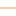
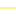
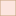

<!doctype html>
<html lang="en">
    <head>
        <meta charset="utf-8">
        <meta http-equiv="X-UA-Compatible" content="IE=edge">
        <meta name="viewport" content="initial-scale=1,user-scalable=no,maximum-scale=1,width=device-width">
        <meta name="mobile-web-app-capable" content="yes">
        <meta name="apple-mobile-web-app-capable" content="yes">
        <link rel="stylesheet" href="css/leaflet.css"><link rel="stylesheet" href="css/L.Control.Locate.min.css">
        <link rel="stylesheet" href="css/qgis2web.css"><link rel="stylesheet" href="css/fontawesome-all.min.css">
        <link rel="stylesheet" href="css/leaflet-measure.css">
        <style>
        #map {
            width: 1447px;
            height: 805px;
        }
        </style>
        <title></title>
    </head>
    <body>
        <div id="map">
        </div>
        <script src="js/qgis2web_expressions.js"></script>
        <script src="js/leaflet.js"></script><script src="js/L.Control.Locate.min.js"></script>
        <script src="js/leaflet.rotatedMarker.js"></script>
        <script src="js/leaflet.pattern.js"></script>
        <script src="js/leaflet-hash.js"></script>
        <script src="js/Autolinker.min.js"></script>
        <script src="js/rbush.min.js"></script>
        <script src="js/labelgun.min.js"></script>
        <script src="js/labels.js"></script>
        <script src="js/leaflet-measure.js"></script>
        <script src="data/LSG_SchsischeSchweiz_1.js"></script>
        <script src="data/NationalparkSchsischeSchweiz_2.js"></script>
        <script src="data/Kernzone_3.js"></script>
        <script src="data/Wanderwege_4.js"></script>
        <script>
        var highlightLayer;
        function highlightFeature(e) {
            highlightLayer = e.target;

            if (e.target.feature.geometry.type === 'LineString') {
              highlightLayer.setStyle({
                color: '#ffff00',
              });
            } else {
              highlightLayer.setStyle({
                fillColor: '#ffff00',
                fillOpacity: 1
              });
            }
        }
        var map = L.map('map', {
            zoomControl:true, maxZoom:28, minZoom:1
        })
        var hash = new L.Hash(map);
        map.attributionControl.setPrefix('<a href="https://github.com/tomchadwin/qgis2web" target="_blank">qgis2web</a> &middot; <a href="https://leafletjs.com" title="A JS library for interactive maps">Leaflet</a> &middot; <a href="https://qgis.org">QGIS</a>');
        var autolinker = new Autolinker({truncate: {length: 30, location: 'smart'}});
        L.control.locate({locateOptions: {maxZoom: 19}}).addTo(map);
        var measureControl = new L.Control.Measure({
            position: 'topleft',
            primaryLengthUnit: 'meters',
            secondaryLengthUnit: 'kilometers',
            primaryAreaUnit: 'sqmeters',
            secondaryAreaUnit: 'hectares'
        });
        measureControl.addTo(map);
        document.getElementsByClassName('leaflet-control-measure-toggle')[0]
        .innerHTML = '';
        document.getElementsByClassName('leaflet-control-measure-toggle')[0]
        .className += ' fas fa-ruler';
        var bounds_group = new L.featureGroup([]);
        function setBounds() {
            if (bounds_group.getLayers().length) {
                map.fitBounds(bounds_group.getBounds());
            }
        }
        map.createPane('pane_Hintergrundkarte_0');
        map.getPane('pane_Hintergrundkarte_0').style.zIndex = 400;
        var layer_Hintergrundkarte_0 = L.tileLayer('https://tile.openstreetmap.org/{z}/{x}/{y}.png', {
            pane: 'pane_Hintergrundkarte_0',
            opacity: 1.0,
            attribution: '',
            minZoom: 1,
            maxZoom: 28,
            minNativeZoom: 0,
            maxNativeZoom: 19
        });
        layer_Hintergrundkarte_0;
        map.addLayer(layer_Hintergrundkarte_0);
        function pop_LSG_SchsischeSchweiz_1(feature, layer) {
            layer.on({
                mouseout: function(e) {
                    for (i in e.target._eventParents) {
                        e.target._eventParents[i].resetStyle(e.target);
                    }
                },
                mouseover: highlightFeature,
            });
            var popupContent = '<table>\
                    <tr>\
                        <td colspan="2">' + (feature.properties['PFLZ'] !== null ? autolinker.link(feature.properties['PFLZ'].toLocaleString()) : '') + '</td>\
                    </tr>\
                    <tr>\
                        <td colspan="2">' + (feature.properties['Name'] !== null ? autolinker.link(feature.properties['Name'].toLocaleString()) : '') + '</td>\
                    </tr>\
                </table>';
            layer.bindPopup(popupContent, {maxHeight: 400});
        }

        function style_LSG_SchsischeSchweiz_1_0() {
            return {
                pane: 'pane_LSG_SchsischeSchweiz_1',
                stroke: false, 
                fill: true,
                fillOpacity: 1,
                fillColor: 'rgba(152,199,102,0.38823529411764707)',
                interactive: false,
            }
        }
        map.createPane('pane_LSG_SchsischeSchweiz_1');
        map.getPane('pane_LSG_SchsischeSchweiz_1').style.zIndex = 401;
        map.getPane('pane_LSG_SchsischeSchweiz_1').style['mix-blend-mode'] = 'normal';
        var layer_LSG_SchsischeSchweiz_1 = new L.geoJson(json_LSG_SchsischeSchweiz_1, {
            attribution: '',
            interactive: false,
            dataVar: 'json_LSG_SchsischeSchweiz_1',
            layerName: 'layer_LSG_SchsischeSchweiz_1',
            pane: 'pane_LSG_SchsischeSchweiz_1',
            onEachFeature: pop_LSG_SchsischeSchweiz_1,
            style: style_LSG_SchsischeSchweiz_1_0,
        });
        bounds_group.addLayer(layer_LSG_SchsischeSchweiz_1);
        map.addLayer(layer_LSG_SchsischeSchweiz_1);
        function pop_NationalparkSchsischeSchweiz_2(feature, layer) {
            layer.on({
                mouseout: function(e) {
                    for (i in e.target._eventParents) {
                        e.target._eventParents[i].resetStyle(e.target);
                    }
                },
                mouseover: highlightFeature,
            });
            var popupContent = '<table>\
                    <tr>\
                        <td colspan="2">' + (feature.properties['OBJECTID'] !== null ? autolinker.link(feature.properties['OBJECTID'].toLocaleString()) : '') + '</td>\
                    </tr>\
                    <tr>\
                        <td colspan="2">' + (feature.properties['NLP'] !== null ? autolinker.link(feature.properties['NLP'].toLocaleString()) : '') + '</td>\
                    </tr>\
                    <tr>\
                        <td colspan="2">' + (feature.properties['Shape_Leng'] !== null ? autolinker.link(feature.properties['Shape_Leng'].toLocaleString()) : '') + '</td>\
                    </tr>\
                    <tr>\
                        <td colspan="2">' + (feature.properties['Shape_Area'] !== null ? autolinker.link(feature.properties['Shape_Area'].toLocaleString()) : '') + '</td>\
                    </tr>\
                </table>';
            layer.bindPopup(popupContent, {maxHeight: 400});
        }

        function style_NationalparkSchsischeSchweiz_2_0() {
            return {
                pane: 'pane_NationalparkSchsischeSchweiz_2',
                opacity: 1,
                color: 'rgba(56,128,54,1.0)',
                dashArray: '',
                lineCap: 'butt',
                lineJoin: 'miter',
                weight: 3.0, 
                fill: true,
                fillOpacity: 1,
                fillColor: 'rgba(124,202,233,0.5333333333333333)',
                interactive: false,
            }
        }
        map.createPane('pane_NationalparkSchsischeSchweiz_2');
        map.getPane('pane_NationalparkSchsischeSchweiz_2').style.zIndex = 402;
        map.getPane('pane_NationalparkSchsischeSchweiz_2').style['mix-blend-mode'] = 'normal';
        var layer_NationalparkSchsischeSchweiz_2 = new L.geoJson(json_NationalparkSchsischeSchweiz_2, {
            attribution: '',
            interactive: false,
            dataVar: 'json_NationalparkSchsischeSchweiz_2',
            layerName: 'layer_NationalparkSchsischeSchweiz_2',
            pane: 'pane_NationalparkSchsischeSchweiz_2',
            onEachFeature: pop_NationalparkSchsischeSchweiz_2,
            style: style_NationalparkSchsischeSchweiz_2_0,
        });
        bounds_group.addLayer(layer_NationalparkSchsischeSchweiz_2);
        map.addLayer(layer_NationalparkSchsischeSchweiz_2);
        function pop_Kernzone_3(feature, layer) {
            layer.on({
                mouseout: function(e) {
                    for (i in e.target._eventParents) {
                        e.target._eventParents[i].resetStyle(e.target);
                    }
                },
                mouseover: highlightFeature,
            });
            var popupContent = '<table>\
                    <tr>\
                        <td colspan="2">' + (feature.properties['OBJECTID'] !== null ? autolinker.link(feature.properties['OBJECTID'].toLocaleString()) : '') + '</td>\
                    </tr>\
                    <tr>\
                        <td colspan="2">' + (feature.properties['Shape_Leng'] !== null ? autolinker.link(feature.properties['Shape_Leng'].toLocaleString()) : '') + '</td>\
                    </tr>\
                    <tr>\
                        <td colspan="2">' + (feature.properties['Shape_Area'] !== null ? autolinker.link(feature.properties['Shape_Area'].toLocaleString()) : '') + '</td>\
                    </tr>\
                </table>';
            layer.bindPopup(popupContent, {maxHeight: 400});
        }

        function style_Kernzone_3_0() {
            return {
                pane: 'pane_Kernzone_3',
                opacity: 1,
                color: 'rgba(196,162,123,1.0)',
                dashArray: '',
                lineCap: 'butt',
                lineJoin: 'miter',
                weight: 1.0, 
                fill: true,
                fillOpacity: 1,
                fillColor: 'rgba(238,112,77,0.17647058823529413)',
                interactive: false,
            }
        }
        map.createPane('pane_Kernzone_3');
        map.getPane('pane_Kernzone_3').style.zIndex = 403;
        map.getPane('pane_Kernzone_3').style['mix-blend-mode'] = 'normal';
        var layer_Kernzone_3 = new L.geoJson(json_Kernzone_3, {
            attribution: '',
            interactive: false,
            dataVar: 'json_Kernzone_3',
            layerName: 'layer_Kernzone_3',
            pane: 'pane_Kernzone_3',
            onEachFeature: pop_Kernzone_3,
            style: style_Kernzone_3_0,
        });
        bounds_group.addLayer(layer_Kernzone_3);
        map.addLayer(layer_Kernzone_3);
        function pop_Wanderwege_4(feature, layer) {
            layer.on({
                mouseout: function(e) {
                    for (i in e.target._eventParents) {
                        e.target._eventParents[i].resetStyle(e.target);
                    }
                },
                mouseover: highlightFeature,
            });
            var popupContent = '<table>\
                    <tr>\
                        <th scope="row">NAME</th>\
                        <td>' + (feature.properties['NAME'] !== null ? autolinker.link(feature.properties['NAME'].toLocaleString()) : '') + '</td>\
                    </tr>\
                    <tr>\
                        <th scope="row">ZEITRAUM</th>\
                        <td>' + (feature.properties['ZEITRAUM'] !== null ? autolinker.link(feature.properties['ZEITRAUM'].toLocaleString()) : '') + '</td>\
                    </tr>\
                </table>';
            layer.bindPopup(popupContent, {maxHeight: 400});
        }

        function style_Wanderwege_4_0(feature) {
            switch(String(feature.properties['q2wHide_SPERRUNG'])) {
                case '1':
                    return {
                pane: 'pane_Wanderwege_4',
                opacity: 1,
                color: 'rgba(255,22,1,1.0)',
                dashArray: '',
                lineCap: 'square',
                lineJoin: 'bevel',
                weight: 1.0,
                fillOpacity: 0,
                interactive: true,
            }
                    break;
                case '2':
                    return {
                pane: 'pane_Wanderwege_4',
                opacity: 1,
                color: 'rgba(230,150,89,1.0)',
                dashArray: '',
                lineCap: 'square',
                lineJoin: 'bevel',
                weight: 1.0,
                fillOpacity: 0,
                interactive: true,
            }
                    break;
                case '99':
                    return {
                pane: 'pane_Wanderwege_4',
                opacity: 1,
                color: 'rgba(99,203,85,1.0)',
                dashArray: '',
                lineCap: 'square',
                lineJoin: 'bevel',
                weight: 1.0,
                fillOpacity: 0,
                interactive: true,
            }
                    break;
                default:
                    return {
                pane: 'pane_Wanderwege_4',
                opacity: 1,
                color: 'rgba(243,236,33,1.0)',
                dashArray: '',
                lineCap: 'square',
                lineJoin: 'bevel',
                weight: 1.0,
                fillOpacity: 0,
                interactive: true,
            }
                    break;
            }
        }
        map.createPane('pane_Wanderwege_4');
        map.getPane('pane_Wanderwege_4').style.zIndex = 404;
        map.getPane('pane_Wanderwege_4').style['mix-blend-mode'] = 'normal';
        var layer_Wanderwege_4 = new L.geoJson(json_Wanderwege_4, {
            attribution: '',
            interactive: true,
            dataVar: 'json_Wanderwege_4',
            layerName: 'layer_Wanderwege_4',
            pane: 'pane_Wanderwege_4',
            onEachFeature: pop_Wanderwege_4,
            style: style_Wanderwege_4_0,
        });
        bounds_group.addLayer(layer_Wanderwege_4);
        map.addLayer(layer_Wanderwege_4);
        var baseMaps = {};
        L.control.layers(baseMaps,{'Wanderwege<br /><table><tr><td style="text-align: center;"></td><td>Gesperrte Wege</td></tr><tr><td style="text-align: center;"></td><td>Unpassierbare Wege</td></tr><tr><td style="text-align: center;"></td><td>Umleitungen</td></tr><tr><td style="text-align: center;"></td><td>Offene Wege</td></tr></table>': layer_Wanderwege_4,' Kernzone': layer_Kernzone_3,' Nationalpark Sächsische Schweiz': layer_NationalparkSchsischeSchweiz_2,' LSG_Sächsische-Schweiz': layer_LSG_SchsischeSchweiz_1,"Hintergrundkarte": layer_Hintergrundkarte_0,},{collapsed:false}).addTo(map);
        map.on("zoomend", function(){

                if (map.hasLayer(layer_Wanderwege_4)) {
                    if (map.getZoom() <= 15 && map.getZoom() >= 19) {
                        layer_Wanderwege_4.eachLayer(function (layer) {
                            layer.openTooltip();
                        });
                    } else {
                        layer_Wanderwege_4.eachLayer(function (layer) {
                            layer.closeTooltip();
                        });
                    }
                }
        });
        setBounds();
        var i = 0;
        layer_Wanderwege_4.eachLayer(function(layer) {
            var context = {
                feature: layer.feature,
                variables: {}
            };
            layer.bindTooltip((layer.feature.properties['NAME'] !== null?String('<div style="color: #000000; font-size: 10pt; font-family: \'MS Shell Dlg 2\', sans-serif;">' + layer.feature.properties['NAME']) + '</div>':''), {permanent: true, offset: [-0, -16], className: 'css_Wanderwege_4'});
            labels.push(layer);
            totalMarkers += 1;
              layer.added = true;
              addLabel(layer, i);
              i++;
        });
                if (map.hasLayer(layer_Wanderwege_4)) {
                    if (map.getZoom() <= 15 && map.getZoom() >= 19) {
                        layer_Wanderwege_4.eachLayer(function (layer) {
                            layer.openTooltip();
                        });
                    } else {
                        layer_Wanderwege_4.eachLayer(function (layer) {
                            layer.closeTooltip();
                        });
                    }
                }
        resetLabels([layer_Wanderwege_4]);
        map.on("zoomend", function(){
            resetLabels([layer_Wanderwege_4]);
        });
        map.on("layeradd", function(){
            resetLabels([layer_Wanderwege_4]);
        });
        map.on("layerremove", function(){
            resetLabels([layer_Wanderwege_4]);
        });
        </script>
    </body>
</html>
